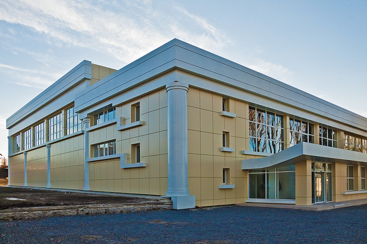

Администрация города Тореза
Детское кафе «Акварель»
Муниципальное учреждение «Дворец Культуры имени
Владимира Маяковского города Тореза»
Муниципальная организация дополнительного образования
«Дворец детского и юношеского творчества
«Юность» города Тореза»

Кинотеатр имени «Артёма»

Муниципальное предприятие
«Плавательный бассейн города Тореза»
Центральный городской парк
«Имени 50-летия Победы города Тореза»
СОБЫТИЯ ИЗ ЖИЗНИ ГОРОДА
ВЫСТАВКА «СОВЕТСКИЙ НЮРНБЕРГ»
Во вторник, 2 ноября 2021 года, в городе Торезе состоялось открытие выставки «Советский Нюрнберг» в рамках социального музейного проекта «Выездной музей». Организатор выставки - Донецкий республиканский краеведческий музей при поддержке Министерства культуры Донецкой Народной Республики, Министерства культуры России и Российского военно-исторического общества. Материалы выставки информируют об открытых процессах, проведенных в 1943-1949 гг. над нацистами и их пособниками в 21 городе СССР, в том числе - Сталино (нынешнем Донецке). Составленная из информационных стендов, выставка рассказывает о преступлениях нацистов и их пособников на языке права с использованием документов и фотографий, не требующих пояснений... Выставка будет работать до 30 ноября в галерее МУ «ДК им. В. Маяковского г. Тореза». Вход посетителей при наличии маски и медицинского документа.